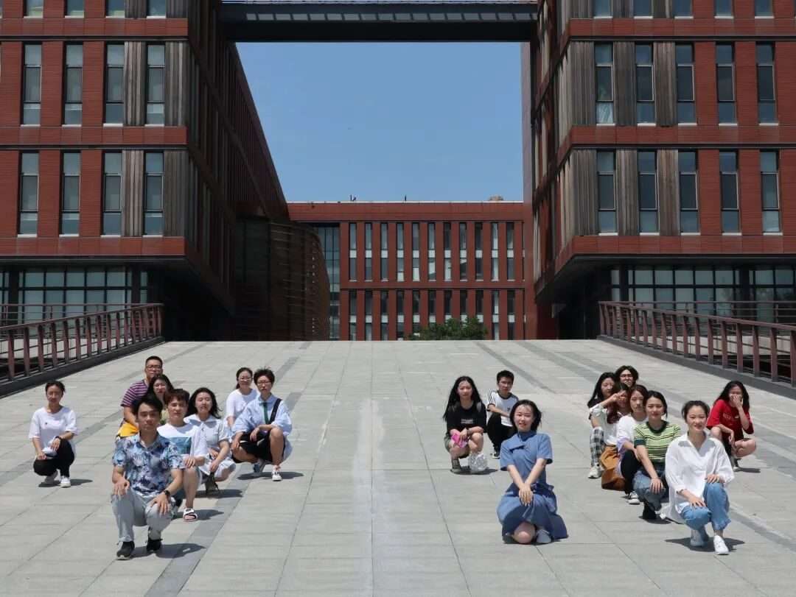

【徜扬恣肆·八】烟花三月下扬州

烟花三月下扬州
李白送孟浩然烟花三月下扬州，杜牧在这里十年一觉扬州梦，姜夔感叹二十四桥仍在，波心荡，冷月无声。明清时期，扬州更是富甲天下，盐商们爱修园子比厨子，乾隆皇帝六下江南有五次都来了扬州。还有2006年，挤在生活节奏飞快的包邮区中的扬州，获得了联合国人居奖。
说走就走，乘着兴致的快风，携一方挚友坐火车下扬州岂不快哉？
在这个“扬州热”的氛围下下，我们行者无疆也在五月中旬确定扬州作为实践地点，我也作为老队员的身份在此加入了行者无疆的大团体，积极筹备建设，遥记得去年十月，我一个懵懵懂懂的新人在宣传海报的指引下产生浓浓的向往。我不禁想象，行者？无疆？文化苦旅中，我们每个人的确都是在道路上摸索前进的行者，无疆的知识与内涵便是我们梦寐以求的精神殿堂。这便当初的我对“行者无疆”的理解。但这次行者无疆之旅则是给我更多的锻炼，从最初的参与面试到面试同学，我也感受到了之前学长学姐的斟酌，从面试，校园文化节，校园采访，一步步我们都在走向扬州。
七月下旬，在扬州疫情影响下实践有条不紊的开展，扬州渊源的文化在眼前慢慢浮现。从瘦西湖的柔美到扬州八怪博物馆的藏品，那些背后的历史故事和精美的文物和艺术令我着迷。而相对于建筑和藏品，倪主任的侃侃而谈更让我对扬州的人文精神有了更深刻的印象。这些时代的结晶经历了岁月的洗礼，更具有不一样的魅力，而且这些熠熠生辉的精神不仅代表了民族的自信，也是民族之魂，值得一代代青年去传承与发展。
本次实践让我感到，人们感觉的扬州慢，其实更像是一种悠闲。但这种悠闲并不是随遇而安懒散空洞，它有历史，有分寸感，有节奏，有小心思，更有讲究。它在扬州人的生活处事上，在扬州人小院里的盆景中，在扬州夏日的树荫下，更在扬州人一早就吃的早茶里。明明不是烟花三月下扬州，而是扬州值得每年每季都去感受！